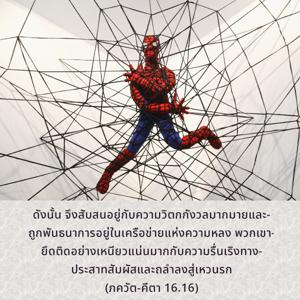
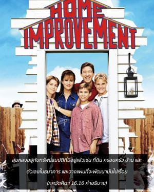

ดังนั้นจึงสับสนอยู่กับความวิตกกังวลมากมาย และถูกพันธนาการอยู่ในเครือข่ายแห่งความหลง พวกเขายึดติดอย่างเหนียวแน่นมากกับความรื่นเริงทางประสาทสัมผัส และถลำลงสู่เหวนรก


คนมารไม่รู้จักพอกับความต้องการที่จะได้เงินมาไม่มีวันเพียงพอ คิดเพียงแต่ว่าปัจจุบันนี้ทรัพย์สินของตนเองมีอยู่เท่าไรและวางแผนที่จะใช้ทรัพย์สินเหล่านี้ให้เพิ่มพูนมากยิ่งขึ้น ด้วยเหตุนี้จึงไม่ลังเลที่จะกระทำบาปใดๆ ดังนั้นเขาจึงทำธุรกิจในตลาดมืดที่ผิดกฎหมายเพื่อสนองประสาทสัมผัส ลุ่มหลงอยู่กับทรัพย์สมบัติที่มีอยู่แล้ว เช่น ที่ดิน ครอบครัว บ้าน และตัวเลขในธนาคาร และวางแผนที่จะพัฒนามันไปเรื่อยๆ มีความเชื่อในพลังความสามารถของตนเองโดยไม่รู้ว่าสิ่งที่ได้มานั้นก็เนื่องมาจากบุญเก่าในอดีตจึงได้รับโอกาสสะสมสิ่งของเหล่านี้ แต่เขาไม่มีแนวคิดถึงเหตุในอดีตเพียงแต่คิดว่าทรัพย์สมบัติที่สะสมได้อย่างมหาศาลทั้งหมดนี้ก็เนื่องมาจากความพยายามของตนเอง คนมารเชื่อในพลังความสามารถในการทำงานของตนแต่ไม่เชื่อในกฎแห่งกรรม ตามกฎแห่งกรรมกล่าวว่ามนุษย์เกิดในตระกูลสูง ร่ำรวย มีการศึกษาดี หรือมีความสวยงามมากก็เนื่องมาจากผลบุญในอดีต พวกมารคิดว่าสิ่งทั้งหลายเหล่านี้เป็นเหตุบังเอิญ และเนื่องมาจากพลังความสามารถส่วนตัวพวกเขาไม่สามารถรู้ถึงการจัดการที่อยู่เบื้องหลังผู้คนอันหลากหลายที่มีความสวยงาม และการศึกษาทั้งหมดนี้ผู้ใดที่มาแข่งขันกับคนมารเช่นกันจะเป็นศัตรูของเขา มีคนมารอยู่มากมายและมารแต่ละคนจะเป็นศัตรูกับมารคนอื่นๆ ความเป็นปรปักษ์กันนี้ลุ่มลึกมากยิ่งขึ้นระหว่างบุคคล ระหว่างครอบครัว ระหว่างสังคม และในที่สุดระหว่างชาติ ดังนั้นจึงมีการต่อสู้กันเสมอทั้งสงครามและความเป็นปรปักษ์มีอยู่ทั่วโลก
มารแต่ละคนคิดว่าตนเองควรมีชีวิตอยู่ด้วยการเสียสละของคนอื่นทั้งหมด โดยทั่วไปคนมารคิดว่าตัวเองเป็นพระผู้เป็นเจ้าสูงสุด และครูมารสอนสาวกของตนว่า “ทำไมพวกเจ้าเสาะแสวงหาพระเจ้าที่อื่น พวกเจ้าทั้งหมดเป็นพระเจ้า พวกเจ้าชอบอะไรเจ้าก็ทำได้ อย่าไปเชื่อในพระเจ้าโยนพระเจ้าทิ้งไปเสีย พระเจ้าตายแล้ว” เหล่านี้คือคำสั่งสอนของพวกมาร
ถึงแม้ว่าคนมารเห็นคนอื่นมีความร่ำรวยและมีอิทธิพลเท่าๆกัน หรือแม้มากกว่าก็ยังคิดว่าไม่มีผู้ใดรวยไปกว่าตน และไม่มีผู้ใดมีอิทธิพลมากไปกว่าตน สำหรับการส่งเสริมไปสู่ระบบดาวเคราะห์ที่สูงกว่ามารไม่เชื่อในการปฏิบัติ ยชฺญ หรือการบูชา เหล่ามารคิดจะผลิตวิธี ยชฺญ ของตนเอง และเตรียมเครื่องจักรกลบางอย่างที่จะสามารถนำพาพวกตนไปถึงดาวเคราะห์ที่สูงกว่าดวงใดก็ได้ ตัวอย่างที่ดีของคนมารเช่นนี้คือ ราวณ (ทศกรรณ์) ผู้เสนอนโยบายแก่ผู้คนว่าจะเตรียมบันไดซึ่งไม่ว่าใครก็สามารถไปถึงสรวงสวรรค์ได้โดยไม่ต้องปฏิบัติพิธีบูชาดังที่ได้กำหนดไว้ในคัมภีร์พระเวท ในทำนองเดียวกันในยุคปัจจุบันคนมารเหล่านี้พยายามไปยังระบบดาวเคราะห์ที่สูงกว่าด้วยการเตรียมเครื่องจักรกล เหล่านี้คือตัวอย่างแห่งความสับสน ผลก็คือโดยไม่รู้ตัวพวกมารกำลังถลำลงสู่เหวนนรก ณ ที่นี้คำสันสกฤต โมห-ชาล มีความสำคัญมาก ชาล หมายความถึง “แห” เหมือนกับปลาที่อยู่ในร่างแหไม่มีทางที่จะหลุดออกมาได้